, das die Gewichtung (Fehler) für X und Y beinhaltet;
, das die Gewichtung (Fehler) für X und Y beinhaltet;Für einen gegebenen Datensatz 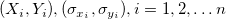, wobei X die unabhängige Variable und Y die abhängige Variable ist, und 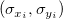 Fehler für X bzw. Y sind. -- Lineare Anpassung X-Fehler passt die Daten an ein Modell mit der folgenden Form an:
| 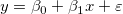 |
(1) |
|---|---|
| 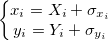 |
(2) |
Wenn Sie eine lineare Anpassung durchführen, erstellen Sie ein Analyseberichtsblatt, dass die berechneten Eigenschaften enthält. Die Tabellenberichte Parameter modellieren Steigung und Schnittpunkt mit der Y-Achse (Zahlen in Klammern zeigen, wie die Eigenschaften abgeleitet werden):
Definieren Sie , das die Gewichtung (Fehler) für X und Y beinhaltet;
| 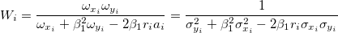 |
(3) |
|---|
Darin sind 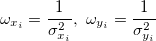 Gewichtungen von 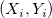, ist die Korrelation zwischen X- und Y-Fehler (d. h. 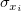 und 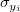), und 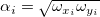.
Die Steigung der angepassten Linie für ohne Gewichtung (Fehler) ist der Initialisierungswert für  . Sie sollten iterativ gelöst werden, bis sukzessive Schätzungen von innerhalb der gewünschten Toleranz übereinstimmen.
. Sie sollten iterativ gelöst werden, bis sukzessive Schätzungen von innerhalb der gewünschten Toleranz übereinstimmen.
Die präzisen Gleichungen, die die Parameter  und
und  für die am besten angepasste Linie mit X-Y-Fehlern schätzen, sind:
für die am besten angepasste Linie mit X-Y-Fehlern schätzen, sind:
| 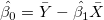 |
(4) |
|---|
| 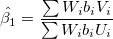 |
(5) |
|---|
wobei 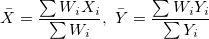.
U und V sind die Abweichung für X und Y:
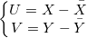
und
| 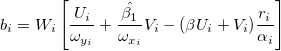 |
(6) |
|---|
Die entsprechende Variation 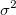 und der Standardfehler  für Parameter sind:
für Parameter sind:
| 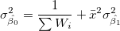 |
(7) |
|---|---|
| 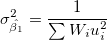 |
(8) |
wobei 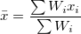,  ist der erwartete Wert von
ist der erwartete Wert von  , und 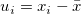.
, und 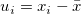.
Der Standardfehler für Parameter ist am Ende gegeben mit:
| 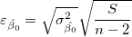 |
(9) |
|---|
| 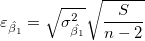 |
(10) |
|---|
wobei  :
:
| 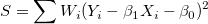 |
(11) |
|---|
Gelten die Regressionsannahmen, haben wir:
 und 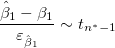 und 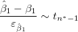 |
(12) |
|---|
Die t-Tests können verwendet werden, um zu untersuchen, ob die Fit-Parameter signifikant von Null abweichen. Das bedeutet, wir können testen, ob 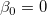 (falls wahr, bedeutet dies, dass die angepasste Linie durch den Ursprung verläuft) oder  . Die Hypothesen der t-Tests sind:
. Die Hypothesen der t-Tests sind:

Die t-Werte können wie folgt berechnet werden:
 und und  |
(13) |
|---|
Mit dem berechneten t-Wert können wir entscheiden, ob die entsprechende Nullhypothese verworfen werden soll oder nicht. Gewöhnlich können wir für ein gegebenes Konfidenzintervall  die Hypothese
die Hypothese  verwerfen, wenn 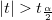. Außerdem wird der p-Wert oder die Signifikanzebene mit einem t-Test angezeigt. Wir weisen auch die Nullhypothese zurück, wenn der p-Wert kleiner ist als .
verwerfen, wenn 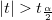. Außerdem wird der p-Wert oder die Signifikanzebene mit einem t-Test angezeigt. Wir weisen auch die Nullhypothese zurück, wenn der p-Wert kleiner ist als .
Die Wahrscheinlichkeit, dass in dem t-Test oben wahr ist.
| 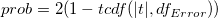 |
(14) |
|---|
wobei tcdf(t, df) die untere Wahrscheinlichkeit für die studentisierte t-Verteilung mit dem df-Freiheitsgrad berechnet.
Mit dem t-Wert können wir das \times 100\%") -Konfidenzintervall für jeden Parameter berechnen:
-Konfidenzintervall für jeden Parameter berechnen:
}\varepsilon _{\hat \beta _j}\leq \hat \beta _j\leq \hat \beta _j+t_{(\frac \alpha 2,n^{*}-k)}\varepsilon _{\hat \beta _j}") |
(15) |
|---|
wobei 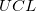 und  für Oberes Konfidenzintervall bzw. Unteres Konfidenzintervall steht.
für Oberes Konfidenzintervall bzw. Unteres Konfidenzintervall steht.
Das Konfidenzintervall halbe Breite ist:
 |
(16) |
|---|
wobei OEG und UEG das obere Konfidenzintervall bzw. untere Konfidenzintervall ist.
Weitere Informationen finden Sie in der Referenz 1 (unten).
| 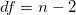 |
(17) |
|---|
n ist die Gesamtanzahl der Punkte.
| 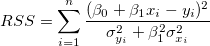 |
(18) |
|---|
| 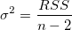 |
(19) |
|---|
Bei der einfachen linearen Regression ist der Korrelationskoeffizient zwischen x und y, der als r bezeichnet wird, gleich:
 falls falls  positiv ist positiv ist |
(20) |
|---|---|
| 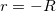 falls negativ ist |
 kann berechnet werden mit:
kann berechnet werden mit:
 |
(21) |
|---|---|
| 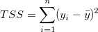 |
Quadratwurzel des Mittelwerts des Fehlers oder die residuale Standardabweichung ist gleich:
 |
(22) |
|---|---|
| 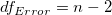 |
Die Kovarianzmatrix der linearen Regression wird berechnet durch:
| 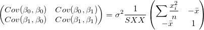 |
(23) |
|---|
Die Korrelation zwischen zwei beliebigen Parametern ist:
=\frac{Cov(\beta _i,\beta _j)}{\sqrt{Cov(\beta _i,\beta _i)}\sqrt{Cov(\beta _j,\beta _j)}}") |
(24) |
|---|
Die FV-Methode ist die Berechnungsmethode von Giovanni Fasano & Roberto Vio, beschrieben in Eine gerade Linie mit Fehler an beiden Koordinaten anpassen.
Die Gewichtung wird definiert als:
| 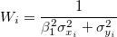 |
(25) |
|---|
Die Steigung der angepassten Linie für ohne Gewichtung (Fehler) ist .
Es wird angenommen, dass
 |
(26) |
|---|---|
| 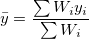 |
(27) |
indem die Summe ^2}") minimiert wird, erhalten wir den Schätzwert
minimiert wird, erhalten wir den Schätzwert  und , indem die teilweisen Ableitungen auf 0 gesetzt werden.
und , indem die teilweisen Ableitungen auf 0 gesetzt werden.
| 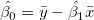 |
(28) |
|---|---|
| 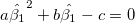 |
(29) |
wobei
| 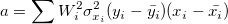 |
(30) |
|---|---|
| 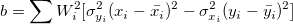 |
(31) |
| 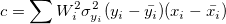 |
(32) |
sollte iterativ gelöst werden, bis sukzessive Schätzungen von innerhalb der gewünschten Toleranz übereinstimmen.
Greifen Sie für jeden Parameterstandardfehler auf das lineare Regressionsmodell zurück.
Weitere Informationen finden Sie in der Referenz 2 (unten).
Wenn Sie eine lineare Anpassung durchführen, erstellen Sie ein Analyseberichtsblatt, dass die berechneten Eigenschaften enthält. Die Tabellenberichte Parameter modellieren Steigung und Schnittpunkt mit der Y-Achse (Zahlen in Klammern zeigen, wie die Eigenschaften abgeleitet werden):
Die Deming-Regression wird für Situationen verwendet, in denen sowohl X als auch Y einem Messungsfehler unterliegen.
Angenommen, sind unabhängig identisch verteilt mit 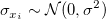 und sind unabhängig verteilt mit , wobei die Normalverteilung mit dem Mittelwert 0 und der Standardabweichung bezeichnet. Wenn , dann ist es eine orthogonale Regression. Der gewichtete Fehler der Quadratsumme des Modells wird minimiert:
|
(33) |
Wir können Parameter lösen:
|
(34) |
|
(35) |
wobei:
 |
|
|---|---|
und:
Die entsprechende Variation für Parameter ist:
Der Standardfehler für Parameter kann geschätzt werden mit:
|
(37) |
|
|
(38) |
und
Gelten die Regressionsannahmen, haben wir:
| und |
Die t-Tests können verwendet werden, um zu untersuchen, ob die Fit-Parameter signifikant von Null abweichen. Das bedeutet, wir können testen, ob (falls wahr, bedeutet dies, dass die angepasste Linie durch den Ursprung verläuft) oder . Die Hypothesen der t-Tests sind:
Die t-Werte können wie folgt berechnet werden:
| und |
(38) |
|---|
Mit dem berechneten t-Wert können wir entscheiden, ob die entsprechende Nullhypothese verworfen werden soll oder nicht. Gewöhnlich können wir für ein gegebenes Konfidenzintervall die Hypothese verwerfen, wenn . Außerdem wird der p-Wert oder die Signifikanzebene mit einem t-Test angezeigt. Wir weisen auch die Nullhypothese zurück, wenn der p-Wert kleiner ist als .
Die Wahrscheinlichkeit, dass in dem t-Test oben wahr ist.
|
(39) |
wobei tcdf(t, df) die untere Wahrscheinlichkeit für die studentisierte t-Verteilung mit dem df-Freiheitsgrad berechnet.
Mit dem t-Wert können wir das -Konfidenzintervall für jeden Parameter berechnen:
|
(40) |
|---|
wobei und für Oberes Konfidenzintervall bzw. Unteres Konfidenzintervall steht.
Das Konfidenzintervall halbe Breite ist:
|
(41) |
|---|
wobei OEG und UEG das obere Konfidenzintervall bzw. untere Konfidenzintervall ist.
Weitere Informationen finden Sie in der Referenz 1 (unten).
|
(42) |
n ist die Gesamtanzahl der Punkte.
Siehe Formel (33).
|
(43) |
Bei der einfachen linearen Regression ist der Korrelationskoeffizient zwischen x und y, der als r bezeichnet wird, gleich:
| falls positiv ist |
(44) |
|---|---|
| falls negativ ist |
kann berechnet werden mit:
|
(45) |
|---|---|
Quadratwurzel des Mittelwerts des Fehlers ist gleich:
|
(46) |
|---|---|
Die Kovarianzmatrix der linearen Regression wird berechnet durch:
 & Cov(\beta _0,\beta _1)\\ Cov(\beta _1,\beta _0) & Cov(\beta _1,\beta _1) \end{pmatrix}=\begin{pmatrix} \ \sigma^2_{\hat{\beta_0}} & -\bar{x}\sigma^2_{\hat \beta _1} \\-\bar{x}\sigma^2_{\hat \beta _1} &\sigma^2_{\hat{\beta_1}} \end{pmatrix}") |
(47) |
|---|
Die Korrelation zwischen zwei beliebigen Parametern ist:
|
(48) |
|---|
Punktdiagramm der Residuen vs. unabhängige Variable  ; jede Zeichnung befindet sich in einem separaten Diagramm.
; jede Zeichnung befindet sich in einem separaten Diagramm.
Punktdiagramm der Residuen vs. Anpassungsergebnisse 
vs. Abfolgenummer 
Histogramm des Residuums
Residuen vs. verzögertes Residuum }")
Das Wahrscheinlichkeitsnetz der Residuen (Normal) kann verwendet werden, um zu prüfen, ob die Varianz ebenfalls normalverteilt ist. Wenn das sich ergebende Diagramm ungefähr linear ist, nehmen wir weiterhin an, dass die Fehlerterme normal verteilt sind. Das Diagramm basiert auf Perzentilen versus geordnete Residuen. Die Perzentile werden geschätzt mit
}{(n+\frac{1}{4})}")
wobei n die Gesamtanzahl der Datensätze und i die i-ten Daten sind. Bitte lesen Sie auch Wahrscheinlichkeitsdiagramm und Q-Q-Diagramm.